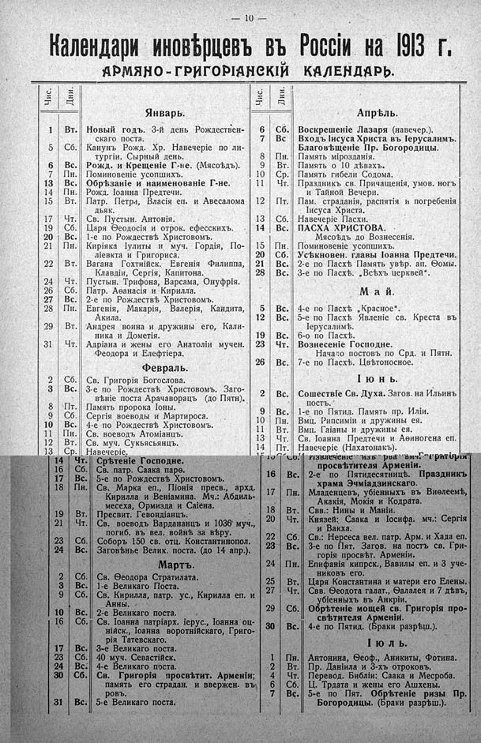

Лист источника 56
Скан

Распознанный текст
— 10 —
Календари иновѣрцевъ въ Россіи на 1913 г.
АРМЯНО-ГРИГОРІАНСКІЙ КАЛЕНДАРЬ.
Чис.
Дни.
Январь.
1 Вт. Новый годъ. 3-й день Рождествен-
скаго поста.
5 Сб. Канунъ Рожд. Хр. Навечеріе по ли-
тургіи. Сырный день.
6 Вс. Рожд. и Крещеніе Г-не. (Мясоѣдъ).
7 Пн. Поминовеніе усопшихъ.
13 Вс. Обрѣзаніе и наименованіе Г-не.
14 Пн. Рожд. Іоанна Предтечи.
15 Вт. Патр. Петра, Власія еп. и Авесалома
дьяк.
17 Чт. Св. Пустын. Антонія.
19 Сб. Царя Ѳеодосія и отрок. ефесскихъ.
20 Вс. 1-е по Рождествѣ Христовомъ.
21 Пн. Киріяка Іулиты и муч. Гордія, По-
ліевкта и Григориса.
22 Вт. Вагана Гохтнійск. Евгенія Филиппа,
Клавдіи, Сергія, Капитона.
24 Чт. Пустын. Трифона, Варсама, Онуфрія.
26 Сб. Патр. Аѳанасія и Кирилла.
27 Вс. 2-е по Рождествѣ Христовомъ.
28 Пн. Евгенія, Макарія, Валерія, Кандита,
Акила.
29 Вт. Андрея воина и дружины его, Кали-
ника и Дометія.
31 Чт. Адріана и жены его Анатоліи мучен.
Ѳеодора и Елефтіера.
Февраль.
2 Сб. Св. Григорія Богослова.
3 Вс. 3-е по Рождествѣ Христовомъ. Заго-
вѣніе поста Арачаворацъ (до Пятн).
8 Пт. Память пророка Іоны.
9 Сб. Сергія воеводы и Мартироса.
10 Вс. 4-е по Рождествѣ Христовомъ.
11 Пн. Св. воеводъ Атоміанцъ.
12 Вт. Св. муч. Сукьясьянцъ.
13 Ср. Навечеріе.
14 Чт. Срѣтеніе Господне.
16 Сб. Св. патр. Саака парѳ.
17 Вс. 5-е по Рождествѣ Христовомъ.
18 Пн. Св. Марка еп., Піонія пресв., архд.
Кирилла и Веніамина. Мч.: Абдиль-
месеха, Ормизда и Саіена.
19 Вт. Пресвит. Гевондіанцъ.
21 Чт. Св. воеводъ Вардананцъ и 1036 муч.,
погиб. въ вел. войнѣ за вѣру.
23 Сб. Соборъ 150 св. отц. Константинопол.
24 Вс. Заговѣнье Велик. поста. (до 14 апр.).
Мартъ.
2 Сб. Св. Ѳеодора Стратилата.
3 Вс. 1-е Великаго Поста.
9 Сб. Св. Кирилла, патр. ус., Кирилла еп. и
Анны.
10 Вс. 2-е Великаго поста.
16 Сб. Св. Іоанна патріарх. іерус., Іоанна оц-
нійск., Іоанна воротнійскаго, Григо-
рія Татевскаго.
17 Вс. 3-е Великаго поста.
23 Сб. 40 муч. Севастійск.
24 Вс. 4-е Великаго поста.
30 Сб. Св. Григорія просвѣтит. Арменіи;
память его страдан. и ввержен. въ
ровъ.
31 Вс. 5-е Великаго поста.
Чис.
Дни.
Апрѣль.
6 Сб. Воскрешеніе Лазаря (навечер.).
7 Вс Входъ Іисуса Христа въ Іерусалимъ.
Благовѣщеніе Пр. Богородицы.
8 Пн. Память мірозданія.
9 Вт. Память о 10 дѣвахъ.
10 Ср. Память гибели Содома.
11 Чт. Праздникъ св. Причащенія, умов. ногъ
и Тайной Вечери.
12 Пт. Пам. страданія, распятія и погребенія
Іисуса Христа.
13 Сб. Навечеріе Пасхи.
14 Вс. ПАСХА ХРИСТОВА.
Мясоѣдъ до Вознесенія.
15 Пн. Поминовеніе усопшихъ.
20 Сб. Усѣкновен. главы Іоанна Предтечи.
21 Вс. 2-е по Пасхѣ Память увѣр. ап. Ѳомы.
28 Вс. 3-е по Пасхѣ. „Всѣхъ церквей“.
Май.
5 Вс. 4-е по Пасхѣ „Красное“.
12 Вс. 5-е по Пасхѣ Явленіе св. Креста въ
Іерусалимѣ.
19 Вс. 6-о по Пасхѣ.
23 Чт. Вознесеніе Господне.
Начало постовъ по Срд. и Пятн.
26 Вс. 7-е по Пасхѣ. Цвѣтоносное.
Іюнь.
2 Вс. Сошествіе Св. Духа. Загов. на Ильинъ
постъ.
9 Вс. 1-е по Пятид. Память пр. Иліи.
10 Пн. Вмц. Рипсиміи и дружины ея.
11 Вт. Вмц. Гаіаны и дружины ея.
13 Чт. Св. Іоанна Предтечи и Аѳиногена еп.
14 Пт. Навечеріе (Нахатонакъ).
15 Сб. Извлеченіе изъ рва вмч. Григорія
просвѣтителя Арменіи.
16 Вс. 2-е по Пятидесятницѣ. Праздникъ
храма Эчміадзинскаго.
17 Пн. Младенцевъ, убіенныхъ въ Виѳлеемѣ,
Акакія, Мокія и Кодрата.
18 Вт. Свв.: Нины и Маніи.
20 Чт. Князей: Саака и Іосифа. мч.: Сергія
и Вакха.
22 Сб. Св.: Нерсеса вел. патр. Арм. и Хада еп.
23 Вс. 3-е по Пят. Загов. на постъ св. Гри-
горія просвѣт. Арменіи.
24 Пн. Епифанія кипрск., Вавилы еп. и 3 уче-
никовъ его.
25 Вт. Царя Константина и матери его Елены.
27 Чт. Свв. Ѳеодота галат., Ѳалалея и 7 дѣвъ,
убіенныхъ въ Анкріи.
29 Сб. Обрѣтеніе мощей св. Григорія про-
свѣтителя Арменіи.
30 Вс. 4-е по Пятид. (Браки разрѣш.).
Іюль.
1 Пн. Антонина, Ѳеоф., Аникиты, Фотина.
2 Вт. Пр. Даніила и 3-хъ отроковъ.
4 Чт. Перевод. Библіи: Саака и Месроба.
6 Сб. Ц. Трдата и жены его Ашхены.
7 Вс. 5-е по Пят. Обрѣтеніе ризы Пр.
Богородицы. (Браки разрѣш.).